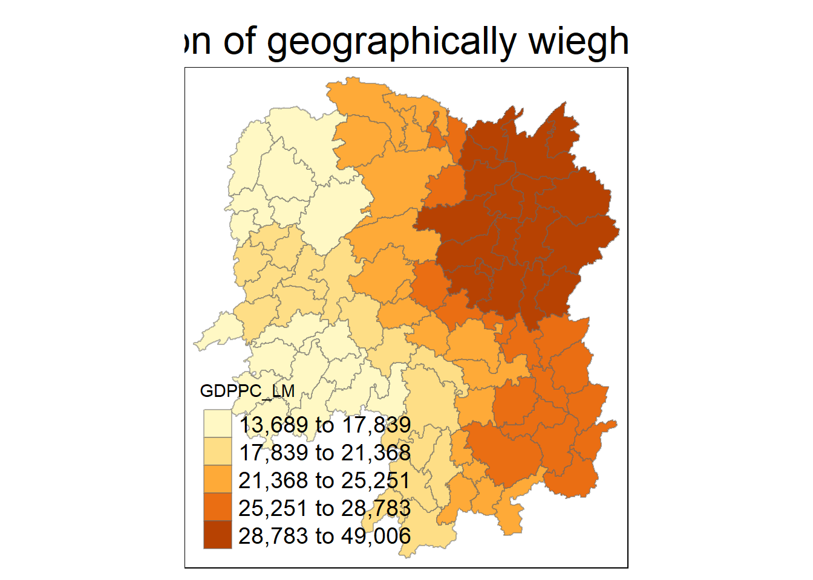

pacman::p_load(sf, ggstatsplot, tmap, tidyverse, knitr, GWmodel)In-Class Exercise 04
Geographically Weighted Summary Statistics
1. Getting Started
Let’s ensure that the following packages of R are installed and launched in R.
2. Loading the Data
The code chunk below uses st_read() of sf package to import Hunan shapefile into R. This imported shapefile will be a simple feature object of sf.
hunan <- st_read(dsn = "data/geospatial",
layer = "Hunan")Reading layer `Hunan' from data source
`C:\byebhai8\ISSS626-GeospatialAnalytics\In-Class_Ex\In-Class_Ex04\data\geospatial'
using driver `ESRI Shapefile'
Simple feature collection with 88 features and 7 fields
Geometry type: POLYGON
Dimension: XY
Bounding box: xmin: 108.7831 ymin: 24.6342 xmax: 114.2544 ymax: 30.12812
Geodetic CRS: WGS 84Next, we will import the Hunan_2012.csv into R by using (read_csv) of readr package. The output is a R dataframe class.
hunan2012 <- read_csv("data/aspatial/Hunan_2012.csv")Rows: 88 Columns: 29
── Column specification ────────────────────────────────────────────────────────
Delimiter: ","
chr (2): County, City
dbl (27): avg_wage, deposite, FAI, Gov_Rev, Gov_Exp, GDP, GDPPC, GIO, Loan, ...
ℹ Use `spec()` to retrieve the full column specification for this data.
ℹ Specify the column types or set `show_col_types = FALSE` to quiet this message.3. Preparing the Data
The code chunk below will be used to update the attribute table of hunan’s SpatialPolygonsDataFrame with the attribute fields of hunan2012 dataframe. This will be performed using the left_join() of dplyr package.
hunan_sf <- left_join(hunan,hunan2012)%>%
select(1:3, 7, 15:16, 31:32)Joining with `by = join_by(County)`4. Converting to SpatialPolygonDataFrame
GWmodel package can only handle spatial data in older sp format, and not the sf format.
hunan_sp <- hunan_sf %>%
as_Spatial()5. Geographically Weighted Summary Statistics with Adaptive Bandwidth
Cross Validation:
bw_CV <- bw.gwr(GDPPC ~ 1,
data = hunan_sp,
approach = "CV",
adaptive = TRUE,
kernel = "bisquare",
longlat = T)Adaptive bandwidth: 62 CV score: 15515442343
Adaptive bandwidth: 46 CV score: 14937956887
Adaptive bandwidth: 36 CV score: 14408561608
Adaptive bandwidth: 29 CV score: 14198527496
Adaptive bandwidth: 26 CV score: 13898800611
Adaptive bandwidth: 22 CV score: 13662299974
Adaptive bandwidth: 22 CV score: 13662299974 AIC:
bw_AIC <- bw.gwr(GDPPC ~ 1,
data = hunan_sp,
approach = "AIC",
adaptive = TRUE,
kernel = "bisquare",
longlat = T)Adaptive bandwidth (number of nearest neighbours): 62 AICc value: 1923.156
Adaptive bandwidth (number of nearest neighbours): 46 AICc value: 1920.469
Adaptive bandwidth (number of nearest neighbours): 36 AICc value: 1917.324
Adaptive bandwidth (number of nearest neighbours): 29 AICc value: 1916.661
Adaptive bandwidth (number of nearest neighbours): 26 AICc value: 1914.897
Adaptive bandwidth (number of nearest neighbours): 22 AICc value: 1914.045
Adaptive bandwidth (number of nearest neighbours): 22 AICc value: 1914.045 Bandwidth AIC:
gwstat <- gwss(data = hunan_sp,
vars = "GDPPC",
bw = bw_AIC,
kernel = "bisquare",
adaptive = TRUE,
longlat = T)Preparing the output data:
gwstat_df <- as.data.frame(gwstat$SDF)
hunan_gstat <- cbind(hunan_sf, gwstat_df)Visualizing it:
tm_shape(hunan_gstat) +
tm_fill("GDPPC_LM",
n = 5,
style = "quantile") +
tm_borders(alpha = 0.5) +
tm_layout(main.title = "Distribution of geographically wieghted mean",
main.title.position = "center",
main.title.size = 2.0,
legend.text.size = 1.2,
legend.height = 1.50,
legend.width = 1.50,
frame = TRUE)